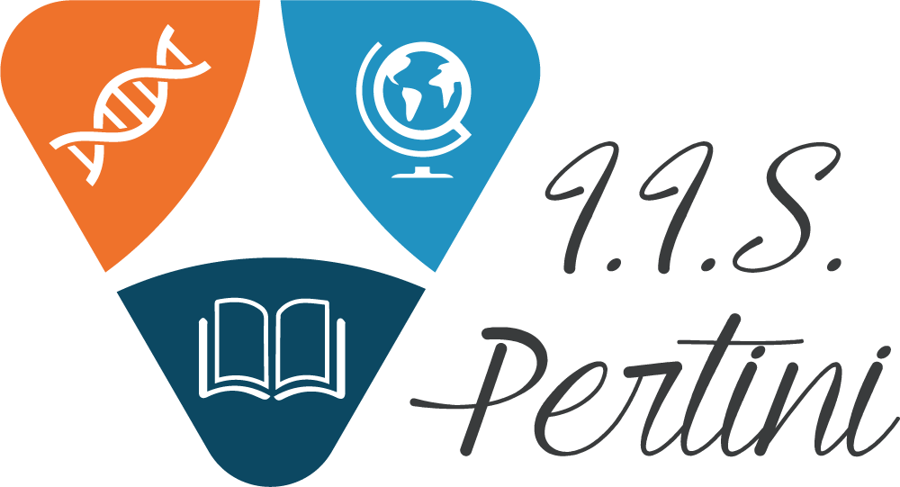
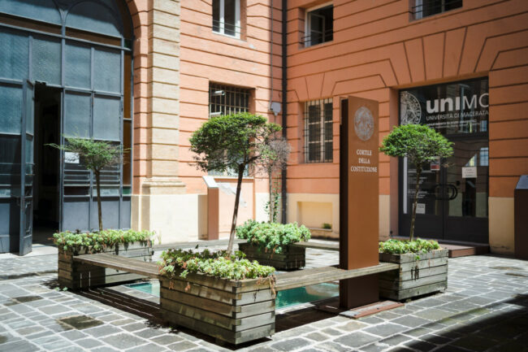

HIGH SCHOOL DIPLOMA 2010-2015
I.I.S "Sandro Pertini" of Campobasso https://itaspertini.edu.it/
Diploma in Languages and Foreing Literatures

BACHERLOR'S DEGREE 2016-2019
University of Macerata https://www.unimc.it/it
First level degree in Translation and Interpreting
Curriculum languages: English - French - Arabic

MASTER'S DEGREE2019-2022
Univesity of Naples "L'Orientale" https://www.unior.it/
Master's Degree in Modern languages for international cooperation
Curriculum languages: English - French - Arabic